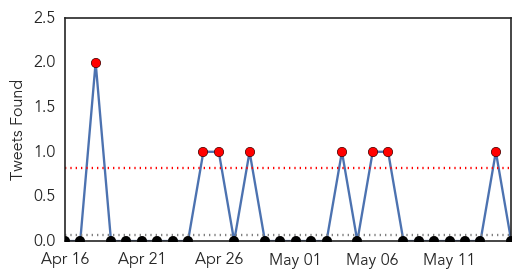
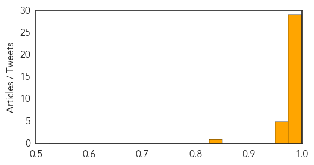
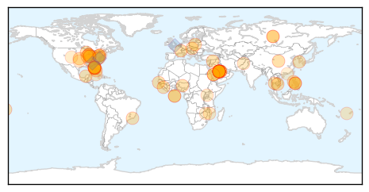

MERS
30-Day Web Trend
29 alerts, 1 warnings
30-Day Twitter Trend
2 alerts, 0 warnings

Article Locations
Article Confidences
Top Articles:
- 1.000
- Nine things you need to know about MERS
- 1.000
- Dutch, Saudi, Jordan reports boost MERS tally
- 1.000
- Arizona braces for MERS virus
- 1.000
- Saudi reports 10 more MERS deaths - Death toll reaches 511 with 20 new cases in Kingdom - Kuwait Times
- 1.000
- WHO: MERS must be taken more seriously, but does not pose emergency
- 0.999
- Temperature checks at airports for visitors from MERS-hit region
- 0.999
- WHO: two confirmed US MERS cases, but still 'no public health emergency'
- 0.999
- MERS: UN warns nations to be vigilant
- 0.999
- US Travelers Warned About MERS; CDC Issues Report on Investigation
- 0.999
- Death toll from Middle East virus rises
- 0.999
- 2nd US case of MERS reported
- 0.999
- Second US Case of MERS Reported
- 0.999
- A second case of deadly MERS in the US
- 0.999
- DH closely monitors first MERS case in the Netherlands
- 0.998
- Ill hospital workers test negative for MERS - World News
- 0.998
- New deaths take Saudi MERS toll to 160
- 0.998
- MERS not yet a global health emergency, WHO says after reviewing situation
- 0.998
- 10 More Deaths in Saudi Arabia, 20 Other Cases
- 0.998
- Middle East respiratory syndrome: Camels and bats and MERS, oh my
- 0.998
- Florida Hospital Says Workers Tested Negative for MERS Virus
- 0.997
- Saudi Arabia reports 10 more deaths from MERS virus, 20 other cases
- 0.997
- Miami Travelers Warned of MERS Risk
- 0.997
- MERS Watch: Netherlands Reports Two Cases
- 0.996
- Saudi finds another 32 Mers cases as disease spreads
- 0.995
- A mystery virus, still
- 0.995
- Death toll from MERS virus up to 157 in Saudi Arabia
- 0.992
- Middle East respiratory syndrome coronavirus (MERS-CoV) – update
- 0.991
- No restrictions on visiting schools, hospitalsHealthcare
- 0.983
- Ministry of Health Issues Travel Warning to Bruneians to Postpone Hajj, Umrah
- 0.973
- AGT's Health Risk Management System Effective in Eliminating MERS Virus - News Press Release
- 0.965
- Netherlands report second MERS virus case
- 0.960
- MUIS advises pilgrims to take precautions amid MERS outbreak
- 0.957
- Saudis question Mecca preparedness as MERS spreads
- 0.955
- Netherlands reports second MERS case - Xinhua
- 0.838
- PEDv ‘like TGE on steroids’
Top Tweets:
-
No tweets found for May 15, 2014
Unknown
30-Day Web Trend
5 alerts, 2 warnings

30-Day Twitter Trend
2 alerts, 0 warnings

Article Locations
Article Confidences

Top Articles:
- 1.000
- WHO Says MERS Not Yet A Global Health Emergency
- 0.999
- UPDATE 2-Two sick U.S. hospital workers test negative for MERS virusHealthcare
- 0.999
- Two sick U.S. hospital workers test negative for MERS virus
- 0.999
- Netherlands MERS Cases Mark Second Global Case; Virus Still Traced Back To Saudi Arabia
- 0.999
- MERS virus is not emergency yet
- 0.999
- Two sick U.S. hospital workers test negative for MERS virus
- 0.999
- UN warns countries to bolster fight against MERS virus
- 0.999
- Two Negative Tests In Florida
- 0.999
- MERS virus very serious, but not an emergency: WHO
- 0.999
- MERS: 10 deaths, 20 new cases in Saudi Arabia
- 0.998
- UN warns states to bolster fight against MERS virus
- 0.998
- Two sick U.S. hospital workers cleared of MERS infection
- 0.996
- Signs at Atlanta airport warn of MERS
- 0.996
- MERS threat increases as 18 countries report cases
- 0.994
- Three more MERS deaths in Saudi; toll reaches 160
- 0.993
- Florida MERS Patient Sits In Busy ER For Hours
- 0.993
- MERS Virus Hits US [AUDIO]
- 0.991
- Florida hospital workers test negative for MERS virus
- 0.989
- Florida hospital workers test negative for MERS virus
- 0.988
- Doctor exposed to Florida MERS case in Canada; tests negative
- 0.984
- Health officials search for cause and treatment of virus
- 0.982
- 2-year-old is latest MERS victimHealthcare
- 0.982
- MERS patient improving, Orlando hospital workers not infected, officials say
- 0.981
- Netherlands reports second case of MERS virus
- 0.973
- Airports asked to post MERS advisory, but Pittsburgh not targeted by CDC
- 0.970
- Illinois health official: MERS risk extremely low
- 0.960
- Two US hospital workers cleared of MERS
- 0.959
- Fla health workers test negative for MERS virus
- 0.953
- Second U.S. MERS case identified in Florida
- 0.942
- Man returning from Saudi Arabia is first Dutch patient of MERS virus
- 0.917
- Chicago Tribune
- 0.917
- Chicago Tribune
- 0.917
- Chicago Tribune
- 0.917
- Chicago Tribune
- 0.917
- Chicago Tribune
- 0.917
- Chicago Tribune
- 0.917
- Chicago Tribune
- 0.917
- Chicago Tribune
- 0.917
- Chicago Tribune
- 0.917
- Chicago Tribune
- 0.917
- Chicago Tribune
- 0.917
- Chicago Tribune
- 0.910
- The world windows to Thailand
- 0.910
- The world windows to Thailand
- 0.900
- One girl dead, 40 others suffering form diarrhoea in Odisha
- 0.874
- DOH says water may be cause of dysentery outbreak
- 0.867
- Departing OFWs advised to get anti-polio vaccine
- 0.866
- News, Information and Connections for Action
- 0.866
- West urges Russia not to meddle in Ukraine election, Britain says
- 0.866
- South Korea indicts four crew members of ferry for manslaughter
Showing top 50 articles...
Top Tweets:
- 0.672
- RT: CDC & health officials from & @HealthyFla together investigate first 2 MERS cases imported to U.S. http:…
- 0.672
- RT: CDC & health officials from & @HealthyFla together investigate first 2 MERS cases imported to U.S. http:…
- 0.655
- We have a local guideline for imported suspected flu or MERS, consistent with PHE guidelines. Abnormal CXR is prerequisite for MERS testing.
- 0.650
- Washington Post: As the number of cases mounts, MERS is still a mystery virus. http://t.co/eixNJfO7qw
- 0.563
- Ministro de Salud confirmó otra muerte a causa de bacteria intrahospitalaria: Otro bebé falleció en el Hospita... http://t.co/NL3XvfYOp5